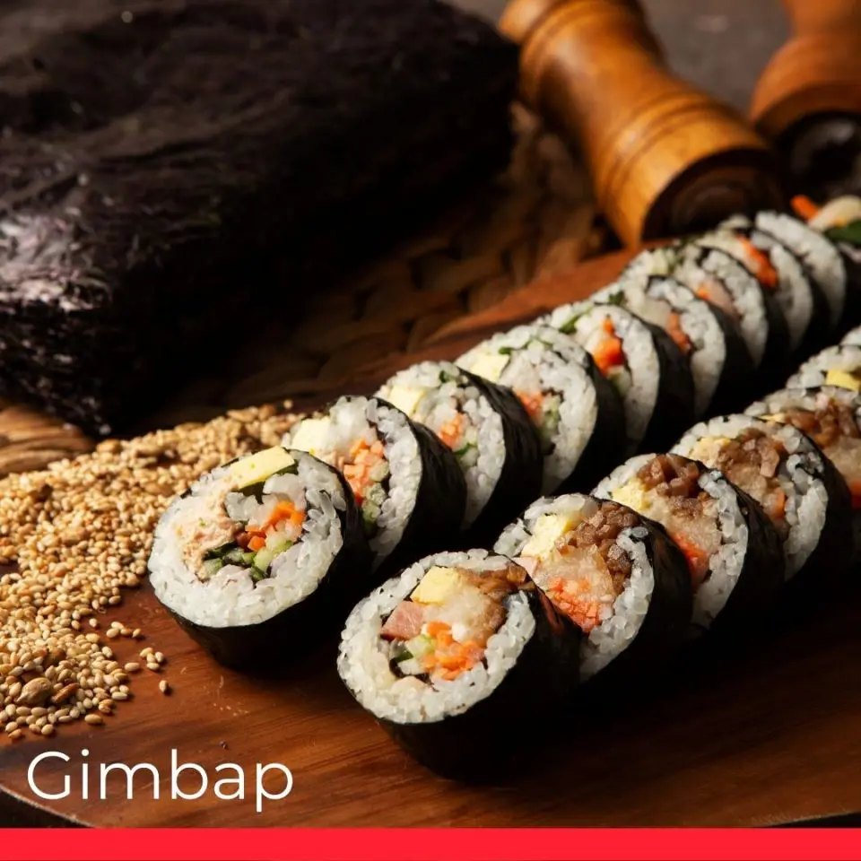

Gimbap

Directions
Step 1
Stir together cucumber pieces and gochujang paste in a bowl; set aside.
Step 2
Bring about 2 cups water to a boil in a large nonstick skillet and stir in spinach; cook until bright green and wilted,
2 to 3 minutes. Drain spinach and squeeze out as much moisture as possible; set spinach aside in a bowl and stir in soy
sauce..
Step 3
Heat 1 teaspoon olive oil in a large nonstick skillet; cook and stir carrots until softened, about 3 minutes. Stir in
garlic and cook just until fragrant, about 1 minute. Stir in cucumber mixture; sprinkle with red pepper flakes. Set
mixture aside in a bowl.
Step 4
Brown beef in a clean nonstick skillet over medium heat, about 5 minutes per side; set aside.
Step 5
Heat remaining 1 teaspoon olive oil in another nonstick skillet over medium-low heat. Fry eggs just on one side until
yolks are runny, but whites are firm, 2 to 4 minutes.
Step 6
Divide cooked rice into 4 large serving bowls; top with spinach mixture, a few pieces of beef, and cucumber mixture.
Place 1 egg atop each serving. Drizzle each bowl with 1 teaspoon sesame oil, a sprinkle of sesame seeds, and a small
amount of gochujang paste if desired.